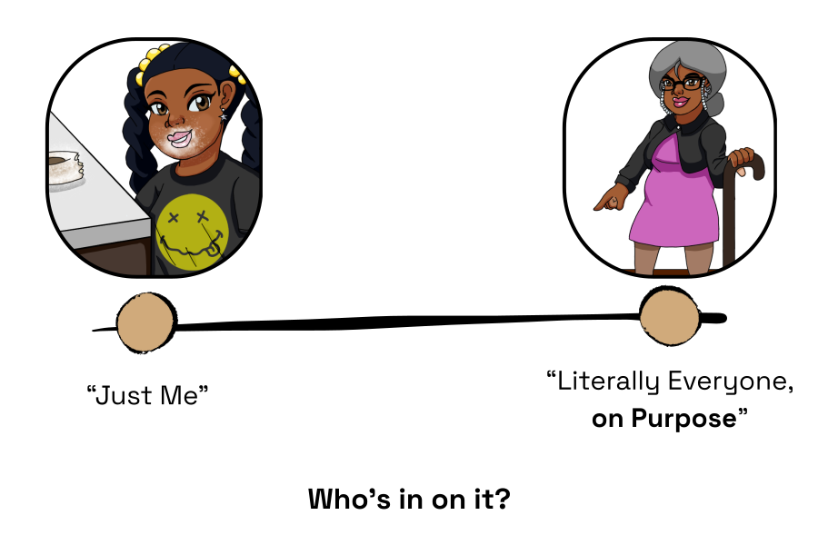
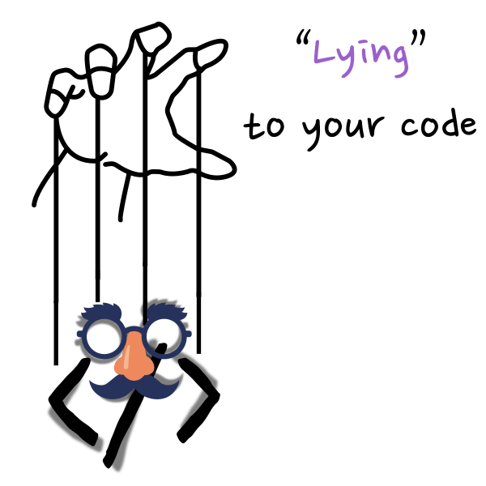
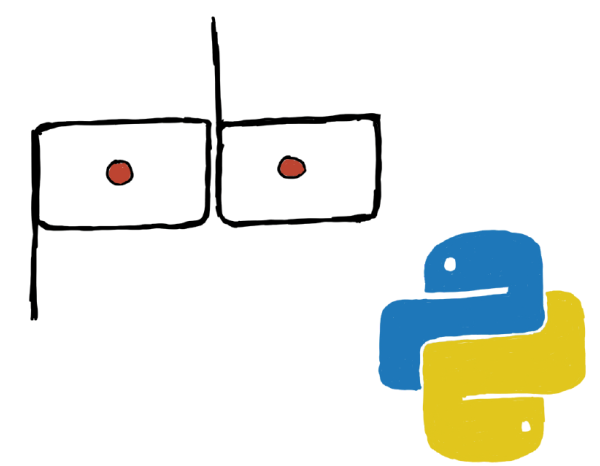
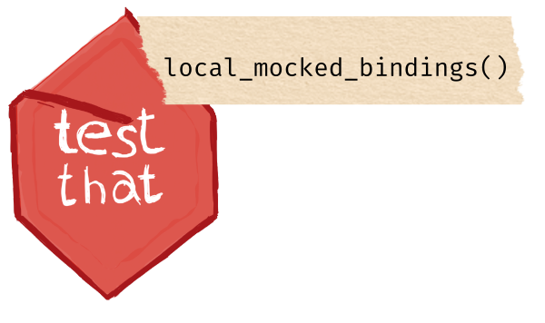
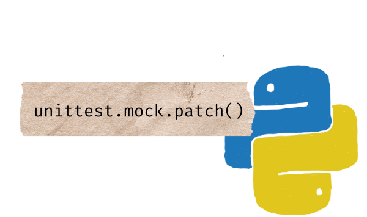
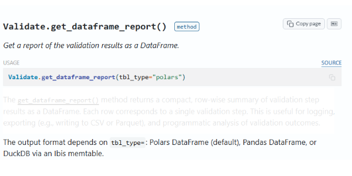
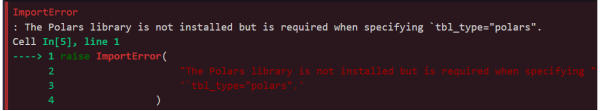
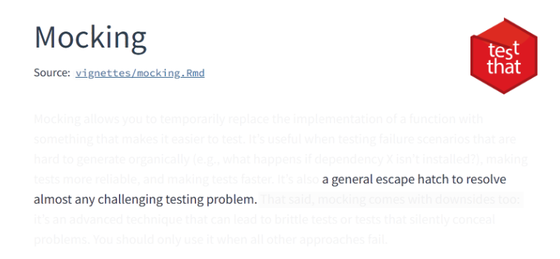
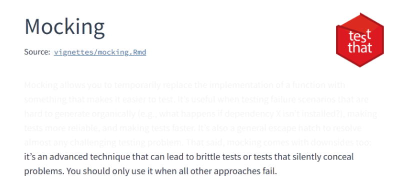

Lies can be harmless

Lies can be necessary

Lies exist on a spectrum


Plot Twist: Python 🐍

A.K.A. Lying to Your CodeWhat is Mocking?
What is Mocking?
Worked with These Before?

Two Questions to Ask
What do we need to lie about?
&
Where do we need to lie about it?
Well, it dependsHow can we Mock?
How do we even do this?


October 32nd? Sure, Why Not 😎

A simple, but fragile, example
A simple, but fragile, example
A simple, but fragile, example
A simple, but fragile, example
Test passed with 1 success 🎉.
A simple, but fragile, example
Test passed with 1 success 🎉.
Plot Twist: Python 🐍
The First Time I Had to Mock

The First Time I Had to Mock

Same Concept, Different Syntax
@pytest.mark.parametrize(
"library, tbl_type",
[("Polars", "polars"), ("Pandas", "pandas"), ("Ibis", "duckdb")],
)
def test_get_dataframe_report_missing_libraries(library, tbl_type):
validation = Validate(data="small_table")
with patch("pointblank.validate._is_lib_present") as mock_is_lib:
mock_is_lib.return_value = False # library not present
with pytest.raises(
ImportError, match=f"The {library} library is not installed"
):
validation.get_dataframe_report(tbl_type)Same Concept, Different Syntax
Same Concept, Different Syntax
Same Concept, Different Syntax
Neither


Software Engineering 101

Same Pattern, Every Time

Remember…
When You Shouldn’t Lie
I Have a Confession
Same Example, Actually Correct
Same Example, Actually Correct
Same Example, Actually Correct
Two Three Questions to Ask
&
Where do we need to lie about it?
How do we keep the lie going?
Even the Docs Know

Even the Docs Know

Enter {withr}

Reach for {withr} for environmental control
• Safely and temporarily modify environment
• Manage side effects in your code
• When it’s environmental, start here
Three Ways I’ve Lied Wrong
Three Ways I’ve Lied Wrong
Three Ways I’ve Lied Wrong
The Rule
So, Why Bother?
Next Time You See Chaos

Flip your Script
Still Messy. Less Scary.

Still Messy. Less Scary.
Fake It ’Til You Make It